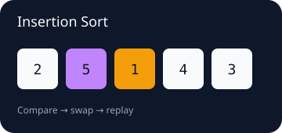
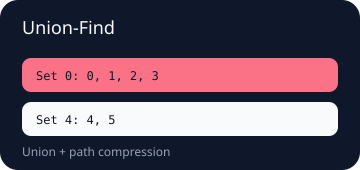
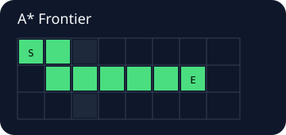

Insertion sort
Stable identities survive comparisons and swaps.
FrontierLab records semantic events and complete visual scenes, then exports them to offline interactive HTML, deterministic SVG, or JSON.

Stable identities survive comparisons and swaps.

Replay component merges and path compression.

Adapt legacy search traces into the generic protocol.
Generate the full interactive players locally:
moon run cmd/main -- insertion-sort html insertion-sort.html